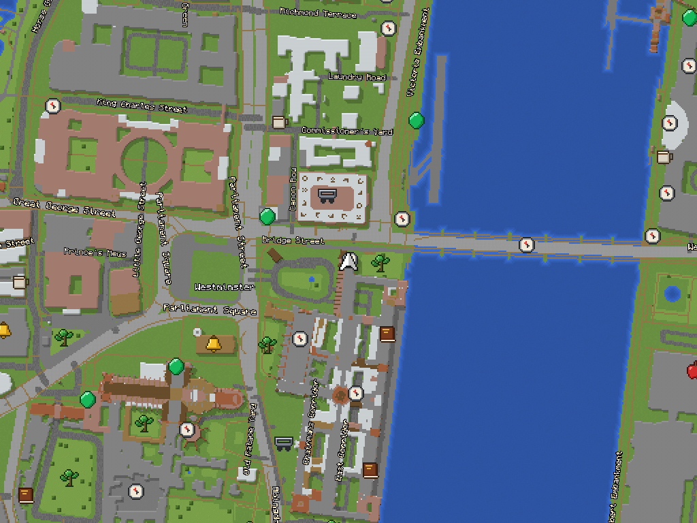
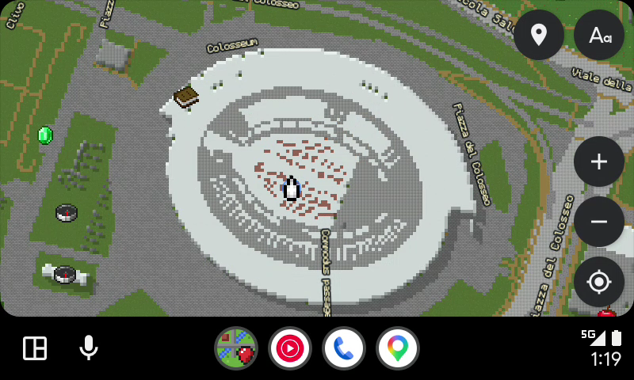
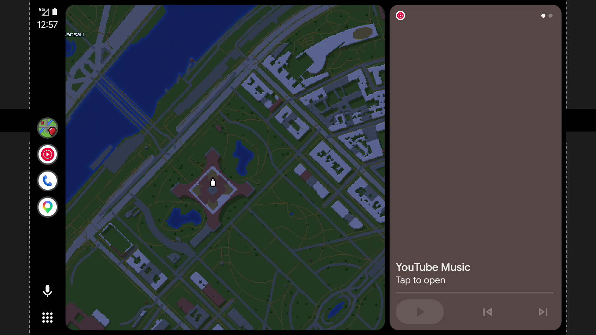

Your real-world streets, landmarks & drives — built out of blocks.
MineMaps turns live maps of the entire planet into a crisp block-world adventure.
Walk through your neighbourhood, spot nearby shops as pixel-art items, save your favourite places,
and put the map right on your car's dashboard with Android Auto.
Shown with MineMaps Original Art — crafted from scratch and bundled out of the box.
TWO LOOKS · YOUR CHOICE
Original Pixel Art Out of the Box — or Official Game Textures in One Tap
Every MineMaps download ships with 100% original hand-crafted pixel art so it's completely legal and ready to use immediately.
Own Minecraft: Java Edition? Enable Include Minecraft textures in Settings and your phone builds the pack directly from Mojang's official game file — and keeps it across every app update.
INCLUDED BY DEFAULTColosseum, Rome & Westminster, London
1. MineMaps Original Pixel Art
Custom-drawn grass, water depth shading, decorative park trees, cobblestone streets, brick & terracotta roofs, and 34 pixel-art item icons.
Phone UI — Original Art

Westminster, London — Original Art
OPTIONAL IN-APP IMPORTBuilt on Your Phone · Kept Across Updates
2. With Official Minecraft Textures*
Uses the game's real block textures, biome grass/foliage tints, item sprites, player map arrow, and red banner pins — built privately on your device.
Every street, river, forest, building, and shop on Earth is drawn live onto a global block grid.
🌍
Live Global Block World
Zoom smoothly from a world overview down to individual 2.4-metre blocks with building shadows, water depth, and forest canopies.
🧭
Two-Finger Twist & Compass
Rotate the map in any direction with natural breakaway resistance so accidental pinches never spin your view. Tap the compass to snap north.
⚔
34 Item Bookmark Icons
Long-press anywhere to save home, work, or secret spots with diamonds, beds, chests, potions, swords, cakes, and banners.
🔍
Instant Search & Tap-to-Inspect
On-device place indexing finds nearby towns, streets, and landmarks in milliseconds. Tap any building, road, or park on the map to inspect it.
🌙
Day & Night + English Labels
Automatic day and night palettes, 9 player arrow colours, quick street-name toggle (Aa), and English (Latin script) names worldwide.
📦
Offline Cache & Easy Backups
Visited areas stay cached on your phone for 30 days (up to 200 MB) so the map still works when signal drops. Export or import your saved places anytime.
BUILT FOR YOUR CAR
Full-Screen or Split-Dashboard on Android Auto
MineMaps registers in Android Auto's main navigation slot — so you can display it full screen across your car display or side-by-side with Spotify, YouTube Music, and other media cards, without interrupting voice directions from other apps.

Full-Screen Car Map (Day Mode)Pan, zoom, toggle street names, recenter on your car, or open your saved places list with a single tap.

Split Dashboard with Media (Night Mode)Automatically switches to the night block palette when your headlights turn on and sits right alongside your music controls.
THREE NAVIGATION MODES
Explore Freely, Route Standalone, or Link with Google Maps
Pick how you want MineMaps to guide you in Settings → Navigation:
DEFAULT · ZERO SETUP
1. Standalone (OpenStreetMap)
Tap Navigate on any place to draw a pixel-art emerald route trail across the block map, complete with live turn banners, distance to next turn, automatic off-route recalculation, and ETA — 100% free with no keys needed.
POWER USER
2. Google Maps Assisted
Mirror live Google Maps turns: Let Google Maps run in the background while MineMaps displays its live turn instructions and traffic ETA on top of the block map. Share & Optional API Key: Share places straight from Google Maps into MineMaps, or paste your own Google API key for Google Places search and live traffic-coloured routes (green, amber, red).
PURE EXPLORATION
3. Map Only (Off)
Want a pure distraction-free block map with no route lines or navigation buttons? Switch navigation to Off and just roam the world.
GET STARTED IN 3 STEPS
Install on Your Phone & Car
1
Download the APK
Grab the latest MineMaps-vX.Y.Z.apk from GitHub Releases and open it on your Android phone. (If Play Protect asks about an unrecognised developer, tap More details → Install anyway.)
2
Automatic In-App Updates
MineMaps checks GitHub Releases automatically (daily by default, or whenever you tap Check now), verifies the SHA-256 checksum and signature, and updates itself in place.
3
Enable in Android Auto
Because MineMaps is installed from GitHub rather than the Play Store, open your phone's Android Auto settings, tap Version 10 times to unlock Developer Mode, and tick Unknown sources in the three-dot menu.
OUR PROMISE & OPEN LICENCE
Free Forever. No Ads. No Subscriptions.
MineMaps will stay 100% free forever. There are no accounts to create, no ads, no analytics trackers, and no paywalls — just a passioneering project built for people who love block worlds and maps.
The code and original artwork are open under the Creative Commons Attribution-NonCommercial 4.0 International (CC BY-NC 4.0) licence.
In plain English: you are free to download, use, inspect, modify, and share MineMaps however you like — the only rules are that you cannot make money off of it (non-commercial only) and you must credit the author (rh45-one).